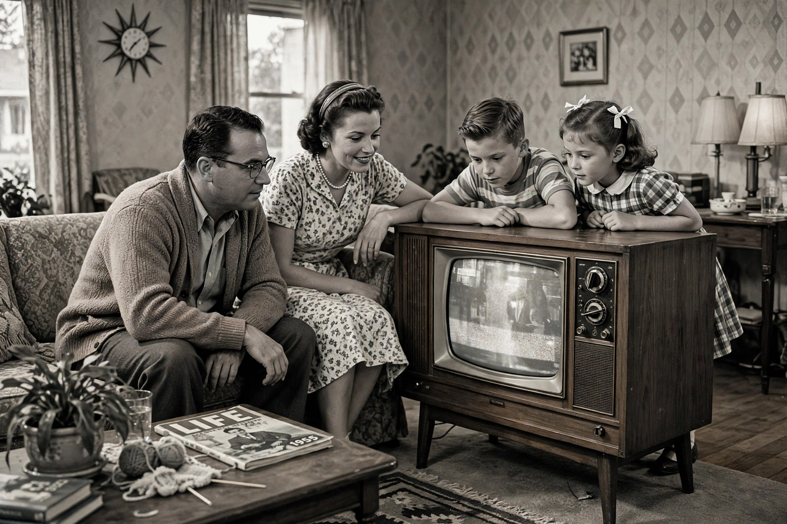

| Television in the United States | |
|---|---|
 | |
| Regulator | Federal Communications Commission (FCC) |
| Major networks | ABC, CBS, NBC, Fox, The CW |
| Public broadcaster | PBS |
| First broadcasts | Late 1920s (experimental); regular service from 1939–1941 |
| Digital transition | June 12, 2009 (full-power stations) |
Television in the United States has been the country's dominant mass medium since the 1950s. American television combines advertiser-supported broadcast networks, public broadcasting, cable television, satellite services, and — since the 2000s — streaming platforms. The United States is the world's largest exporter of television programming, and its industry, centered in Los Angeles and New York, shapes global popular culture.
Experimental television stations operated in the late 1920s and 1930s. Regular network broadcasting began around 1939–1941, but commercial expansion was frozen during the Second World War. After 1945, set ownership exploded: by 1955 more than half of American homes had television. The "Big Three" networks — NBC, CBS, and ABC — dominated, offering news, variety shows, westerns, and early sitcoms such as I Love Lucy. Color broadcasting became standard in the mid-1960s.
The 1970s and 1980s brought cable, which fragmented audiences among channels devoted to news (CNN, launched 1980), sports (ESPN, 1979), music (MTV, 1981), and premium film and drama (HBO, founded 1972). A fourth broadcast network, Fox, launched in 1986. The 1990s and 2000s are often called a new "Golden Age" of television drama, driven by cable series such as The Sopranos, The Wire, and Breaking Bad.
Subscription streaming services — Netflix, Hulu, Amazon Prime Video, Disney+, Max, and others — transformed distribution in the 2010s, normalizing on-demand viewing, full-season releases, and cord-cutting. Broadcast audiences declined, though live sports and news remained resilient. The transition to digital terrestrial broadcasting was completed for full-power stations on June 12, 2009.
Broadcast television is licensed by the Federal Communications Commission under the Communications Act of 1934, with stations organized as network owned-and-operated outlets and affiliates in roughly 210 local markets. Public television is represented by PBS (founded 1969) and its member stations. Ratings are measured principally by Nielsen. Content on broadcast channels is subject to FCC indecency rules, from which cable and streaming are exempt — a distinction that historically allowed cable drama greater creative freedom.